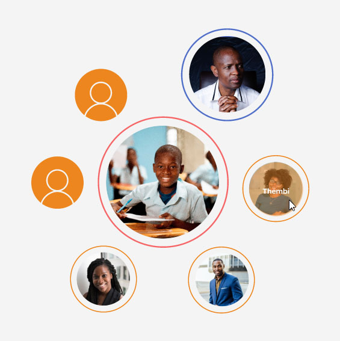

Crew for a Cause is a South African NGO; their aim is to uplift the national education system
through scholar
sponsorships.
In 2022, they wanted to increase their membership-based donations.
We were tasked with coming up with a marketing strategy and creative campaign to scale
the NGO’s impact as part of a student group project at Red & Yellow - Creative School of Business.
MY ROLE
Being a user-centred design student, I was responsible for conducting UX research, identifying problems with
the current website and – with the help of two digital design students
– creating an improved prototype that is inline with our team’s strategy and campaign.
The project was split into two phases
The research phase – identifying the strategy
The creative phase – campaign ideas and mock-ups
Our team consisted of seven marketing students and six creatives, which included visual communication, digital
design and copywriting students. I was the only user-centred design student and was part of both phases. This
meant
I was kind of the middle man, ensuring our research findings made it through to the creative execution.
TEAM MEMBERS Creative team: Arthur Limbada (art director), Briony Blevin (illustrator), Taqiyah Russom
(digital
designer), Tiago Gomes (digital designer), Murray Williamson (copywriter), Caitlin Hobbs (copywriter), Christine
Hogg (user-centred designer)
Marketing team:
Kelly Fagg, Megan Glass, Joshua Kinsey, Chelsea Maguire, Mpumelelo Ngcobo, Daniel Stehlik, Najma Toefy.
UNDERSTANDING DONOR BEHAVIOUR
To figure out what motivates potential donors to give money to a cause, we conducted some baseline research into the
behavioural science of donations.
The main findings that would inform the strategy are:
Research findings that would inform the strategy
USABILITY TESTING
The current website needed improvement. This conclusion was based on a heuristic analysis and comparisons to
competitors’ websites. To further investigate this, I did some usability testing with five participants. All
of them had an interest in various causes, were frequent internet users and – to understand how online donation
behaviour might vary across generations – the age groups ranged from 21 to 67.
Trustmarks
Official endorsements in the form of stamps and logos would help to increase trust in an unknown cause.
5 out of 5
Colour
More emotive visual representations, colour images and interactive elements to bring the concept to life.
4 out of 5
Rewards
The benefits of a membership weren’t apparent.
4 out of 5
Cancellation options
There were doubts about committing to a membership if the cancellation options couldn’t be found.
3 out of 5
Testimonials
Video testimonials giving a voice to the scholars would be more trustworthy than quotes and photographs
(because anyone could just copy and paste these).
2 out of 5
Amount selection
A slider to increase or decrease the donation amount caused frustration because it loaded at a higher amount
than the selected membership.
2 out of 5
Friends
If friends or someone they know had mentioned the cause it would be more trustworthy.
1 out of 5
THE PROBLEM
Users had doubts about the cause because they had never heard of it before. The current website did not
provide them with sufficient assurance.
OPPORTUNITIES
A valuable improvement would be to enhance the visual representation of the cause, and ensure the concept and
membership benefits are communicated clearly.
BEST PRACTICES
Further research looked into the best practices for donation pages,
and how these might differ from e-commerce processes.
To avoid abandonment, an NGO donation journey should include the following elements:
Reminder of the mission
Calling to mind the purpose of the donor’s contribution when they’re making the payment can encourage them to
follow through.
Call-to-action
Clear wording such as ‘Donate’ and a different colour for the donation button help it stand out.
Payment form
As simple as possible, and only ask for information that is absolutely necessary.
Transparency
How the funds are allocated is clear, accessibility of certificates and the type of work done is described in
a clear way.
DONOR VS BUYER JOURNEYS
Payments are being made in each case, so there are of course some clear similarities between donation and
e-commerce check-outs: the payment form should be simple, the information straight-forward and the process
quick.
But the motivation and perceived rewards are very different.
According to Raise Donors, the emotional rush a buyer experiences happens after they have purchased a product,
but a donor experiences it just before they make the donation – that’s why donation pages are so important.
Donation pages need to address the implicit emotional rewards of donating to a worthy cause: feeling like
you're part of something great, being in the position of influencing someone’s happiness, and showing others
that you’re doing good.
A Neuroscience Marketing article mentions how, at least on a subconscious level, donating can be perceived as
“mating fitness”.
Having resources to spare indicates a good quality in a mate, and thus motivates the donor to show off his
good deeds to others.
Whereas buyers often have a solid idea of what they want when they get to the product page, donors need more
encouragement.
Beyond eliciting the emotional rewards, donors need to be convinced of the cause’s trustworthiness and impact.
Raise Donors explains how, as opposed to being a funnel with gravity working in its favour, the donor journey
is “a mountain of many micro-decisions your donor has to make.”
Donor journeys need a different approach
USING SOCIAL PROOF THE RIGHT WAY
Social proof – a psychological and social phenomenon where people are known to copy the behaviour of others in
an attempt to do the right thing – was coined by Robert Cialdini in 1984, and many charities leverage it to
increase donations.
Peer-to-peer fundraising campaigns, which encourage donors to take charge and share with their network, are
evident examples. But social proof can also go wrong.
If a cause publishes the amounts donors have donated in an attempt to influence others to match these amounts,
it could also result in donors who may have wanted to donate more to donate less, especially if numbers are
low at the beginning of the campaign.
Therefore, the Neuroscience Marketing article points out, it’s better to use “broader social proof” – such as
how many people have donated or how many people have been helped – and not publish donation amounts.
IS IT MANIPULATION?
The seeming conflict between how acting altruistically also has a what’s-in-it-for-me aspect came up in a lot
of our group discussions.
A touchy subject without a clear answer, our conclusion was that egotistic motivation doesn’t necessarily diminish
the outcome (although in some situations it could). But for our case, we decided that making the donation process
appealing increases the help learners get,
resulting in an improved society, which benefits everyone.
We had to understand that the purpose of streamlining the donation journey is not to trick potential
donors out of their money.
It’s to ensure donors have all the necessary information when deciding whether to donate and minimal
distraction once the decision is made.
Although some online sources argued for UX dark patterns, such as removing the navigation on the donation
page, we decided donors still need to be able to change their minds.
In line with the marketing strategy our team came up with, it was also important to show that giving can be a
fun, communal experience to do with friends and family.
THE STRATEGY
Crew for a Cause had already been making use of a “pod system”. To cover a learner’s school fees, a group of
friends and family can club together to share the costs.
This option wasn’t emphasised on their current website however, so – after doing the research into social
proofing – our team decided to base the campaign on the creation of pod systems.
Once this decision was made, we knew that we would no longer just be building a straightforward donation page
with recurring membership options, but a pod page.
THE TARGET MARKET
To get people to start pods, the marketing team decided to split the target market into initiators and
followers.
The campaign would be aimed at the initiators who would start pods and get their friends and family, the
followers, to join. Initiators are driven self-starters, and outgoing personality types, interested in
networking and social activity.
THE JOURNEY
The campaign the marketing team came up with would target initiators through various touchpoints: Instagram,
Facebook, LinkedIn, and search.
It would be divided into four stages: Intrigue, Opinion, Participation, and Shareability.
What’s important here is that in the participation phase, the initiator is informed through targeted social
media posts about what a pod is and how to form it.
So once they land on the homepage, they are likely to already have some background knowledge and are ready to
take action.
Here are the steps a pod starter might take from landing on the homepage to starting a pod:
Initiator and follower user journey
CHALLENGES
Donating is not a straightforward process and considered “irrational” in a marketing context because there is no
obvious gain or profit for the donor.
There are implicit rewards though, but the donor may not be explicitly aware of them or openly admit to them.
Making sure the pod page communicates these rewards without overtly stating them was one of the main challenges.
Further challenges included making sure all designers are on the same page because not everyone was part of the
whole process.
The target market’s age range was also very broad – from 20-50 – so finding an appropriate tone and style was
another challenge our team had to tackle.
THE SOLUTION
Our digital solution: a peer-to-peer-fundraising-inspired personalised pod page for the initiator.
At first we were considering incorporating a progress bar to show how much money still needs to be raised and a
list of who has joined, but one of the copywriters suggested turning this into a pod diagram.
At that stage the creative concept had progressed: the visual style, including the logo, would include circles
to symbolise the coming together of a pod.
So this made a lot of sense and we were able to incorporate our donor research nicely.
The pod diagram indicates to potential pod joiners that they are getting the opportunity to be part of something
fun their friends are doing, while doing good.
Seeing the scholar, and what is needed to help cover his school fees, elicits a feeling of having an influence
over his well-being.
The inclusion of a video testimonial further enhances this, and gives the learner a voice, answering
usability-test participants’ call for authenticity.
The pod learner is able to share his good deeds with his friends easily, with a purpose: to cover Ntando’s
school fees.
Example of a pod page created by user persona Hlompho
IMPLEMENTING THE RESEARCH
Here are some examples of how each research finding was incorporated into the pod page design.

BROAD SOCIAL PROOF
To show who has joined the pod, we created this diagram with members’ profile images.
It emphasises the pod starter, and the learner who is supported by the pod members.
Everyone contributes the same amount, meaning nobody gets influenced to donate a higher or lower amount.
But seeing who has joined, signifies trust and motivates others to join.
THE END IN SIGHT
Through seeing how many spots are still needed to be filled, potential pod-joiners have a clear
indication
of how much they are contributing to the overall goal.
It also gives them a sense of accomplishment when they join and see the progress. Seeing the balance being
tipped towards completion shows them how much influence they have.
ONE RECIPIENT
Emphasising that the pod is supporting one learner is based on the research that donors are more likely
to
give if they build a relationship with one recipient, as opposed to many. We included a quote by the learner
to highlight his personality, and inspire pod joiners to get to know him.
MAP TO IMPACT
We clearly stated how much is needed to reach the goal: two more members need to join paying R250 monthly
for Ntando’s school fees to be covered.
This links the donation to a concrete achievement.
REWARDS
We added an option to add a personalised message to the share function, for further social proof, but
also
making it fun and easy for the initiator to share their pod page and show what they are doing.
ITERATIONS
Our pod diagram developed from a progress bar and list of people who have donated, into an interactive hover
animation.
The style of our website was created by one of the art directors in our group in order to fit the overall style of
the campaign.
We implemented style changes throughout the process.
First ideas to visualise the pod system
RETROSPECTIVE
Because we were multiple designers working on one project, I feel like we should have started the rough SCAMPing
process a bit earlier.
This would have made it easier to ensure everyone was on the same page when it came to understanding why certain
design decisions were made.
Due to time constraints, some pages were quickly SCAMPed up when we had already started with the digital designs of
other pages.
In future, I will also make sure that all designs are regularly shown to the strategy team.
At one point we realised that, because the persona was changed, we had used stock images that don’t look like the
persona’s friends for one of the animations, which the strategy team picked up on – luckily.
This just meant that we had to redo the animation, which worked out fine in the end because we had an opportunity to
include further improvements.
If we had more time, we would have done testing on the digital prototype and – depending on the results – perhaps
refine the membership confirmation process.
Currently, we just tried to keep it as simple as possible with best practices and include the payment options that
were identified in a survey the marketing students conducted.
Working on a project with so many people from different disciplines can be a challenge, especially when you’re the
only UX person – communication about how we do things sometimes gets lost or misinterpreted.
Necessary, but sometimes lengthy, group discussions also meant there was less time in the day to work on designs.
But it was well-worth the learning curve. During our five-week stint, we got a lot done and getting direct feedback
from group members of different disciplines massively improved our ideas and designs.
I think we all were pretty impressed with what we managed to come up with in a short and stressful period of time.